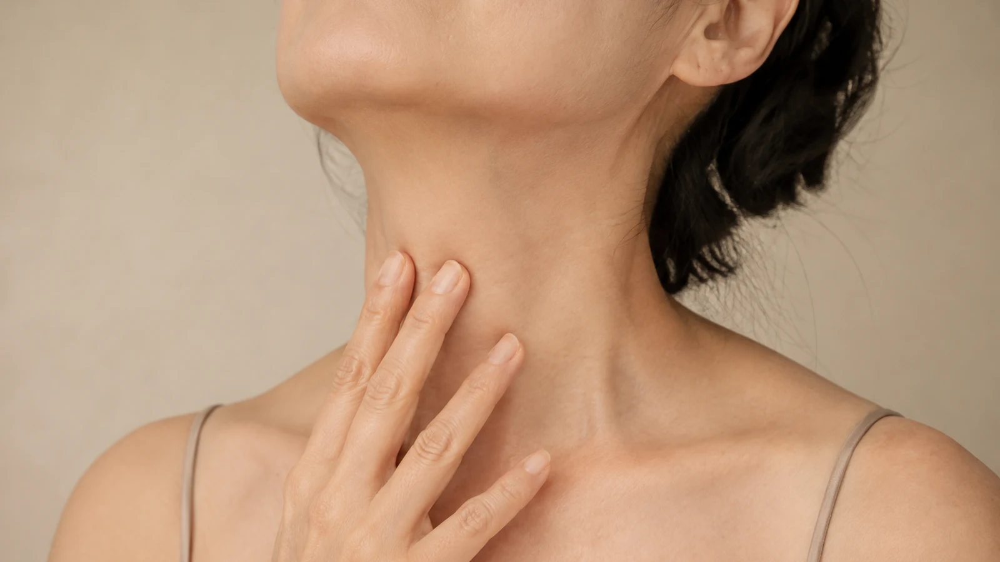
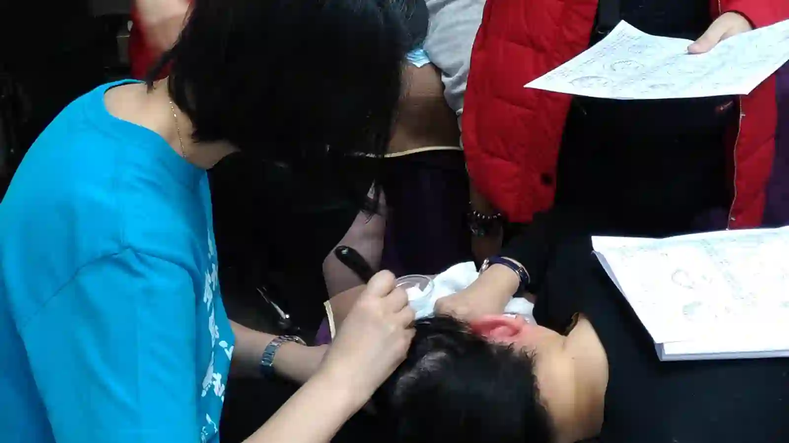

The Bojin Journal · Jaw & Neck
Those Horizontal "Necklace" Lines on Your Neck

You buy the pretty necklace, you put it on, and the rings already drawn across your neck seem to mock it. Two or three horizontal lines, running straight across, there whether you tilt your head or not. Women ask me if it's sun damage they should have prevented decades ago. Usually it isn't. These are fold lines, and folds have a different cause and a different answer than the scattered texture the sun leaves.
The rings around your neck are folds, not wrinkles from the sun. Think of them like an accordion pleat set by years of looking down. Here Remember: this is a gentle, supported self-care observation you can test on one side of your face—never a forceful press or medical treatment.
The accordion, not the sunburn
Think of the front of your neck like the pleat of an accordion. An accordion folds in the same places every time you close it, and after enough closings those pleats stay set, standing even when the accordion is open. Your neck does the same thing every time you look down at a phone, a book, a cutting board. The skin creases in the same three or four places, thousands of times, and the creases set.
Necklace lines run straight across because they're folds, set by the neck bending in the same spot over and over, not random damage sprinkled by the sun. That matters: a fold responds to easing the tension and dryness in the crease and to bending it less, while sun texture would call for something else entirely.
This is why the neck shows these before the face does. It has thin skin, little padding, and it spends more of the day folded than almost any other part of you. The accordion gets worked hard and rests rarely.
What eases a set fold, and what doesn't
Let me be straight before the steps. A crease pressed in over years won't iron flat from a hands-on habit, and anyone promising that is overselling. What a gentle release genuinely does is soften how deep and set the folds look, by easing the tension that keeps them tight, encouraging fluid to move so the area isn't puffy above a line, and helping thin skin hold the moisture that makes a fold look shallower. Supple and softened, not erased.
A 5-minute neck-fold release
The neck's skin is thin and unforgiving, so always use oil or a rich moisturizer for glide, never work it dry.

Lengthen first
Tilt your chin up gently and hold for a few breaths, opening the accordion so the folds aren't pinched shut while you work.
Cross the lines, don't dig into them
With flat fingertips or a stone, make slow, light passes downward across the neck, gliding over each ring rather than pressing hard into the crease itself.
Work side to side along a fold, gently
Follow the length of one line horizontally with the lightest pressure, softening the tension held along it, then move to the next.
Sweep the whole neck downward
Long passes from under the jaw to the collarbone, one side at a time, always downward, giving any puffiness above the folds a route out.
Finish rich
Press in a last layer of moisturizer or oil while the skin is warm, since a well-hydrated fold always reads shallower than a dry one.
The habit that decides tomorrow's folds
The release eases the folds you have. What you do the rest of the day decides how much deeper they get. Raise the phone toward your eyes instead of dropping your chin to it, lift your screen, and read with the book up rather than your neck down. You can't stop looking at things, but you can stop folding the accordion in the same three places all day long.
You can't un-fold years of looking down in one session. But keep the folds supple and stop pressing them deeper, and the necklace you actually bought gets to be the one people notice.
Quick answers
Are necklace lines caused by sun damage?
Sun plays a part in the skin's overall texture, but the horizontal rings themselves are mostly fold lines, creases set by the neck bending in the same place over and over. That's why they run straight across rather than scattering the way sun texture does, and why the direction you look all day matters more than most people think.
Can a gentle release smooth them out?
It can soften how set they look by easing the tension and dryness that deepen a fold, and by improving how the area holds moisture. It won't iron out a crease that years of bending pressed in, and no home method does. Think softer and more supple, not erased.
What's the single most useful thing I can change?
Stop feeding the fold. Raise your phone and screen toward eye level so your neck isn't bent forward for hours a day. That one habit addresses the cause; the release below handles the tension and dryness sitting in the folds you already have.
Is the neck safe to work on?
Yes, gently, with light pressure and always sweeping downward toward the collarbone, never pressing hard on the front of the throat. Skip it if you have a thyroid condition, swollen glands, or a recent neck procedure, and check with a doctor about anything tender or unusual.
See the downward neck passes
Direction and a light hand matter more on the neck than anywhere else you'll practice. My free 3-minute video shows the exact downward sweeps so your first session is a safe one.
Watch the free 3-min videoYu-Ting Lan is a Taiwan-based international bojin instructor and the founder of Héhé Studio. She has taught her bojin method to more than a thousand students, from complete beginners to grandmothers, across Taiwan, Hong Kong, and Malaysia.